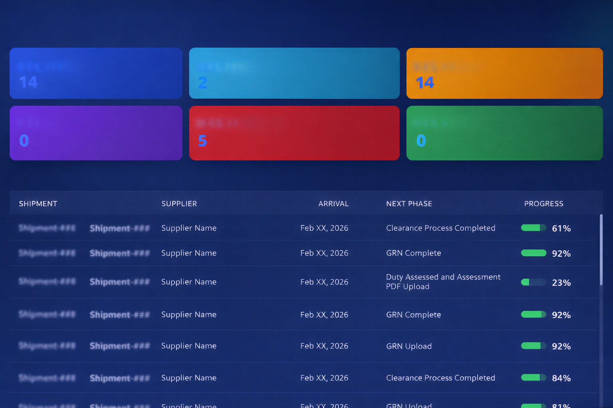
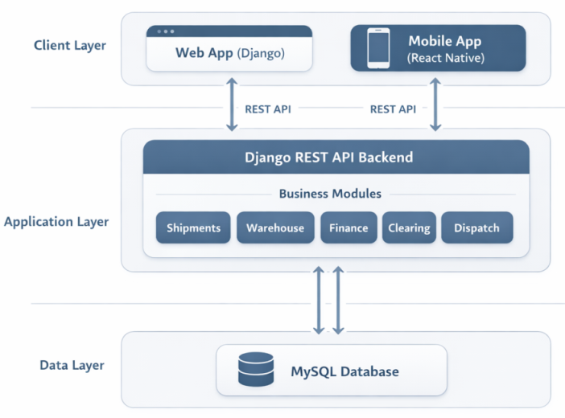

Intelligent Logistics Management Platform
The Intelligent Logistics Management Platform is an end-to-end shipment lifecycle system designed to streamline import and logistics operations from arrival notice through warehouse processing to final dispatch. It centralizes shipment tracking, financial documentation, customs clearing, and operational workflows into a single real-time platform.

Overview
The Intelligent Logistics Management Platform is a centralized system developed to digitize and manage the full lifecycle of import shipments, from arrival notice through warehouse handling to final dispatch. The platform integrates shipment tracking, customs clearing, financial documentation, and operational coordination into a single structured workflow.
Built with Django, React Native, and MySQL, the system provides real-time visibility into shipment status, warehouse processes, and banking documentation. It replaces manual tracking and fragmented records with a unified logistics dashboard that improves operational accuracy and coordination across departments.
Project Facts
Role
Full-Stack Software Engineer
Type
Logistics & Import Operations Platform
Platforms
Web & Mobile
Status
Production / Operational
Problem
Import and logistics operations were previously managed using spreadsheets and disconnected records, resulting in limited visibility into shipment status, delays in warehouse and clearing coordination, and manual tracking of bank and duty documents. The lack of a centralized system made it difficult to monitor shipment progress and ensure accurate operational and financial control.
Solution
A centralized logistics management platform was designed to digitize the entire shipment lifecycle, including arrival tracking, customs clearing, warehouse processing, financial documentation, and dispatch coordination. The system provides structured workflow stages, real-time status updates, and integrated documentation management to ensure accurate and efficient logistics operations.
Key Features
Shipment Lifecycle Tracking
End-to-end tracking from arrival notice to dispatch completion.
Warehouse Processing
Arrival, unloading, GRN verification, and warehouse status monitoring.
Customs & Clearing
Clearing agent coordination and assessment document tracking.
Financial Documentation
Bank documents, duty payments, and settlement tracking.
Dispatch & Delivery
Vehicle, driver, and transport coordination.
Status & Audit Tracking
Phase-based shipment history and audit trail.
Role-Based Workflow
Controlled updates across logistics departments.
Operational Dashboard
Centralized real-time shipment visibility.
System Architecture
The platform uses a centralized Django backend with a MySQL database and a React Native mobile interface for operational updates. Core modules include shipments, warehouse processing, customs clearing, banking documentation, and dispatch management.

Impact
Centralized
Visibility
Reduced
Manual Tracking
Improved
Coordination